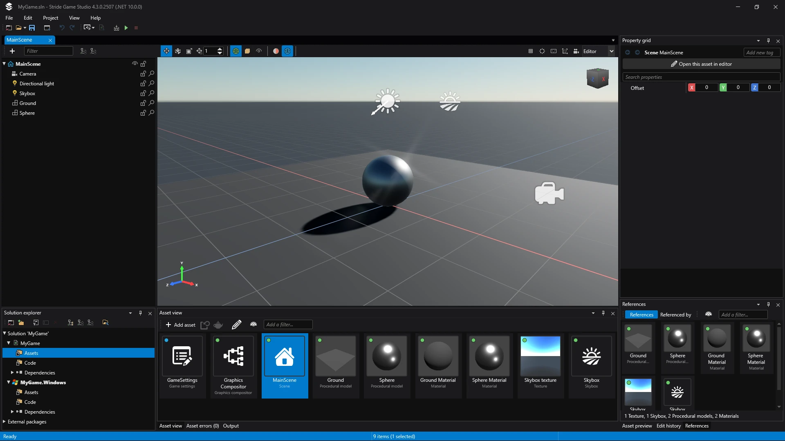
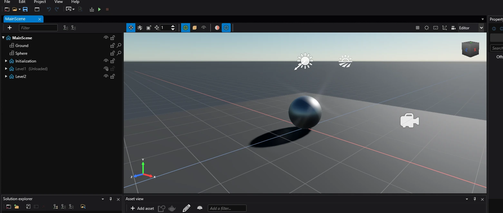
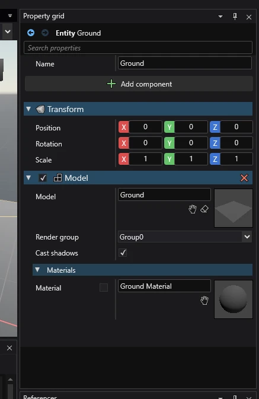
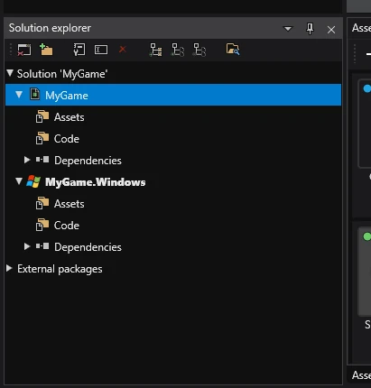
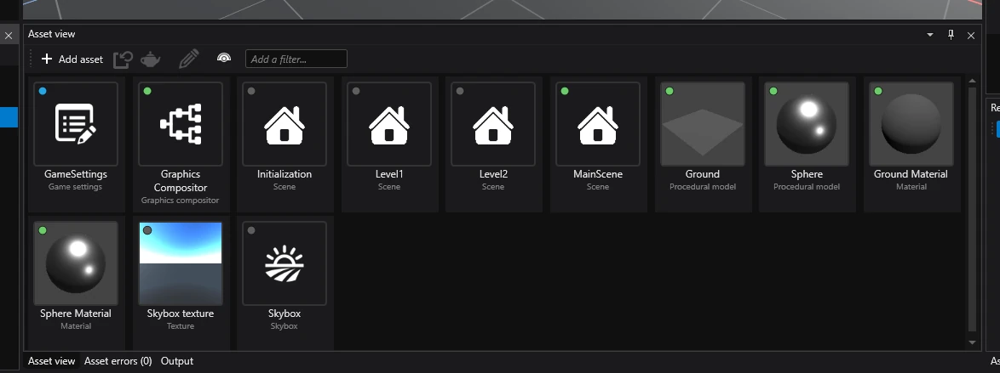

Game Studio
Beginner
Game Studio is an essential tool, used for editing assets, arranging scenes and much more. It's important to familiarize yourself with it's layout.

Asset Editor

The asset editor is a dedicated editor for certain assets. It's most commonly used for editing scenes and their entities.
Property Grid

The property grid displays a list of properties of selected assets and entities.
This is where you can assign components to entities and edit their properties.
Solution Explorer

The solution explorer displays the hierarchy of elements in the C# solution associated with the Project. These elements contain assets and code.
In a new project, there are 2 or more items under the solution: NameOfMyProject and NameOfMyProject.NameOfPlatform (there could be one or more of these).
- NameOfProject - contains files for the game.
- NameOfProject.NameOfPlatform - contains files specific to that platform (mostly, the
NameOfProjectApp.cs file from which the game starts and the window icon).
Under each of those elements, there are 2 folders: Assets and Code.
- Assets - contains all assets of that element.
- Code - contains all code of that element.
Asset View

The asset view displays contents of a selected folder in the solution explorer.
Items from the asset view can be dragged into other editors (for example: dragging a prefab into the scene in the Asset Editor).
To create a new asset, click the Add asset button in the top left corner.
Further reading
For more information, visit the Game Studio page.